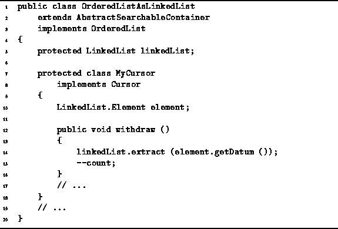

Data Structures and Algorithms
with Object-Oriented Design Patterns in Java
Data Structures and Algorithms
with Object-Oriented Design Patterns in Java
The final method to be considered is the withdraw
method of the OrderedListAsLinkedList.MyCursor class.
This method removes an arbitrary item from an ordered list,
where the position of that item is specified by a cursor instance.
The code for the withdraw method
is given in Program  .
.

Program: OrderedListAsLinkedList.MyCursor class withdraw method.
The item in the linked list at the position specified by the cursor is removed by calling the extract method provided by the LinkedList class. The running time of the withdraw method depends on the running time of the extract of the LinkedList class. The latter was shown to be O(n) where n is the number of items in the linked list. Consequently, the total running time is O(n).
 Copyright © 1998 by Bruno R. Preiss, P.Eng. All rights reserved.
Copyright © 1998 by Bruno R. Preiss, P.Eng. All rights reserved.